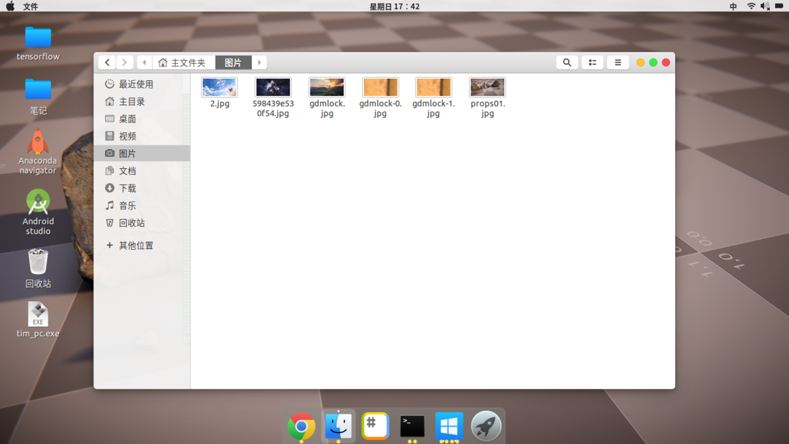

效果图（这个是Ubuntu桌面，用了OSX的主题）

安装完Ubuntu后，第一件事一般就是更新软件源。然后就是开始折腾桌面环境，毕竟一个好的桌面环境，可以让人神清气爽，间接的就提高了工作效率。本文主要告诉你一些修改桌面环境的软件的使用方法，而不会手把手教你怎么把桌面环境和我折腾的一模一样，学会了方法，你们可以修改成自己想要的风格。
１、软件安装
首先我们要下载gnome-tweak-tool，它是一个图形化的界面管理工具# ubuntu软件安装方法
sudo apt-get install '你想要安装的软件';
// 这里我们使用 sudo apt-get install gnome-tweak-tool
2、自带的主题
软件安装完成以后可以打开软件列表(一般是按win键)，就可以找到我们的软件，中文名字叫做优化
我们可以使用它快速来更改我们的主题，图标和字体，你可以自己选择一下系统自带的主题界面试试效果，稍后我将教你怎么下载并安装第三方的主题界面。
我想，当你尝试过一段时间gnome-tweak-tool（中文名：优化）后，你很快就会发现，他无法更改桌面windows任务栏一样的状态栏（它的名字叫Shell），和旁边那个装满图标的dock。
Shell这东西默认情况上是灰色的（优化－外观－Shell），这个时候我们要下载程序gnome-shell-extensions，下载软件的方法我上面已经说过了。
下载完成以后，我们再gnome-tweak-tool，选择Extension（扩展），你会发现这里比原来多了很多功能
把拓展打开（在左上角），然后打开User themes，这个时候gnome-tweak-tool的外观下的shell就可以打开了。你可以尝试的更改一下shell。
接下来就是怎么更改dock，在Ubuntu的设置里面给我们提供了更改dock的功能，不过它的功能单一，我们这里使用另一个第三个软件，它叫Dash to Dock，这一次，我们不通过命令行获取，我们使用Ubuntu自带的商店下载
那我们怎么调节dock呢，我们打开gnome-tweak-tool，选择Extension，接着我们就可以找到Dash to dock选项。
注意：这里我们只要通过左边设置符号更改dock便好
不要点开右边的圆角按钮
3、第三方界面主题的安装
我们可以在网上下载别人的第三方主题，这里给大家推荐一下网址
https://www.opendesktop.org/
上面主题一般都有自己的安装方法，你可以更改字体，主题，shell，应用图标，锁屏样式，总之Linux比Windows开放，所以桌面可以设计的特别特别好看。
比如我们要下载第三方主题，我们只需要从网上下载相关的资源，然后移动到指定文件夹(主题是/usr/share/themes)，然后通过gnome-tweak-tool切换便可以了。
### 在移动资源时，请使用cp或者mv命令，记得加sudo，因为需要获得管理员权限。